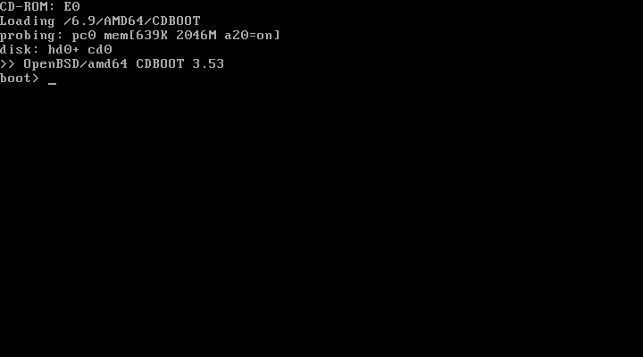
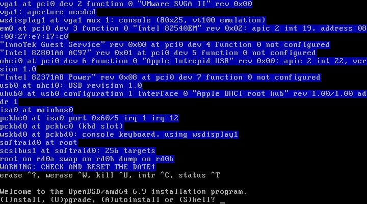

Instalação do OpenBSD
Introdução
O OpenBSD é um sistema operacional unixlike com foco em segurança, livre e de código aberto e baseado em BSD. Criado em '95 como fork do NetBSD por Theo de Raadt. Essa instalação alvo é para uma máquina de testes para quem quer iniciar os estudos em OpenBSD, com nano, gerenciador de login padrão da distro, IceWM para um mínimo de usabilidade, Firefox e um gerenciador de arquivos gráfico.
Aviso: Não recomendo a instalação do OpenBSD em modo UEFI e muito menos para iniciantes
Nessa tela apenas aguarde o carregamento dos arquivos...
Essa é a tela de início da instalação, como não existe contexto ou interface a documentação segue sem demais capturas de tela.
Welcome to the OpenBSD/amd64 6.9 installation program.
(I)nstall, (U)pgrade, (A)utoinstall or (S)hell?
Digite i e tecle Enter para iniciar a instalação
Choose your keyboard layout ('?' or 'L' for list)
Digite br e tecle Enter para selecionar o layout ABNT2
System hostname? (short form, e.g. 'foo')
Digite o seu hostname e tecle Enter
Available network interfaces are: (interfaces)
Which network interface do you wish to configure? (or 'done') [em0]
Se a sua interface de rede desejada estiver dentro de [] tecle Enter ou digite a interface correta e tecle Enter
IPv4 address for em0? (or 'dhcp' or 'none') [dhcp]
Tecle Enter para configurar o IPv4 com dhcp ou caso queira um ip específico insira o ip desejado para a interface e tecle Enter
IPv6 address for em0? (or 'autoconf' or 'none') [none]
Tecle Enter para utilizar somente IPv4, autoconf para configuração automática de IPv6 ou insira o ip desejado para a interface e tecle Enter
Which network interface do you wish to configure? (or 'done') [done]
Tecle Enter para finalizar a configuração de interfaces de rede
DNS domain name? (e.g. 'example.com') [my.domain]
Tecle Enter caso não tenha a necessidade de configurar um DNS domain name ou insira o domain name
Password for root account? (will not echo)
Insira a senha de administrador e tecle Enter
Password for root account? (again)
Insira novamente a senha de administrador e tecle Enter
Start sshd(8) by default? [yes]
Insira no a menos que você queira ter a possibilidade de se conectar a essa máquina via ssh
Do you expect to run the X Window System? [yes]
Tecle Enter caso queira utilizar uma interface gráfica ou digite no caso queira utilizar a máquina apenas por console
Do you want the X Window System to be started by xenodm(1)? [no]
Digite yes e tecle Enter
Setup a user? (enter a lower-case loginname, or 'no') [no]
Insira o nome de usuário que você deseja para o seu usuário padrão ou tecle Enter para utilizar na conta de administrador (não recomendado)
Full name for user seuuser? [seuuser]
Tecle Enter ou insira o nome completo do usuário da conta
Password for user seuuser? (will not echo)
Insira a senha de usuário e tecle Enter
Password for user seuuser? (again)
Insira novamente a senha de usuário e tecle Enter
What timezone are you in? ('?' for list) [America/Sao_Paulo]
Tecle Enter se a região estiver correta ou ? para listar as zonas de fuso horário e depois digite a região e depois subregião caso queira mudar
Available disks are: wd0
Which disk is the root disk? ('?' for details) [wd0]
? mostra detalhes dos discos disponíveis, digite qual é o disco em que deseja instalar o sistema ou apenas tecle Enter caso o disco em [wd0] seja o disco correto
No valid MBR GPT.
Use (W)hole disk MBR, whole disk (G)PT, (O)penBSD area or (E)dit? [OpenBSD]
Recomendo teclar Enter ou w para usar todo o disco em MBR para BIOS, ou você pode editar as partições com a opção e
Use (A)uto layout, (E)dit auto layout, or create (C)ustom layout? [a]
Tecle Enter para utilizar o layout padrão, ou e caso deseje editar manualmente
Let's install the sets!
Location of sets? (cd0 disk http nfs or 'done') [cd0]
Se o dispositivo de instalação estiver correto ([cd0] no caso da minha instalação) tecle Enter
Pathname to the sets? (or 'done') [6.9/amd64]
Se o sistema foi reconheccido corretamente em [] tecle Enter
Select sets by entering a set name, a file name pattern or 'all'. De-select sets by prepending a '-', e.g.: '-game'. Selected sets are labelled '[X]'.
Set name(s)? (or 'abort' or 'done') [done]
Insira -game*, não precisaremos de jogos nessa máquina, se game.tgz for desmarcado tecle Enter
Directory does not contain SHA256.sig. Continue without verification? [no]
Insira yes
Location of sets? (cd0 disk http nfs or 'done') [done]
Apenas tecle Enter
Time appears wrong. Set to ''? [yes]
Se a data entre ' ' estiver correta tecle Enter
CONGRATULATIONS! Your OpenBSD install has been successfully completed!
Exit to (S)hell, (H)alt or (R)eboot? [reboot]
Insira h para desligar ou r para reiniciar
The operating system has halted.
Please press any key to reboot.
Tecle Enter
Pós-Instalação
Assim que o sistema iniciar ele vai carregar um gerenciador de login bem modesto:

Por questões de segurança manteremos esse gerenciador de login mesmo, para alternar para um terminal e começar a configurar o básico do sistema você pode usar Ctrl+Alt+F1. Para atualizar os pacotes do sistema logue como root e dê o comando
pkg_add -u
Agora vamos instalar um editor de texto via console para alterar algumas configurações, um gerenciador de janelas, um navegador e um gerenciador de arquivos com
pkg_add nano icewm firefox thunar
(ou qualquer outro gerenciador de arquivos que você deseje)
Com Ctrl+Alt+F2 logue no seu usuário padrão e crie um arquivo .xsession com
nano .xsession
contendo
exec icewm-session
retorne para o tty5 com Ctrl+Alt+F5 e tente iniciar uma sessão no IceWM com o seu usuário, se tudo deu certo você verá essa tela